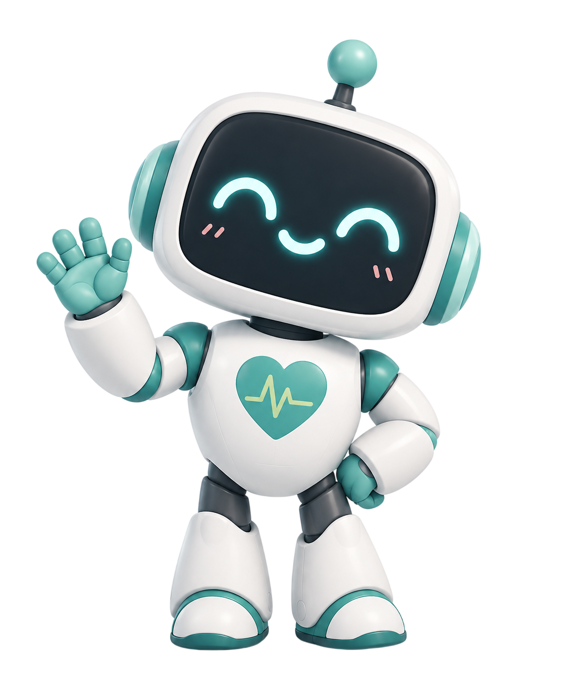
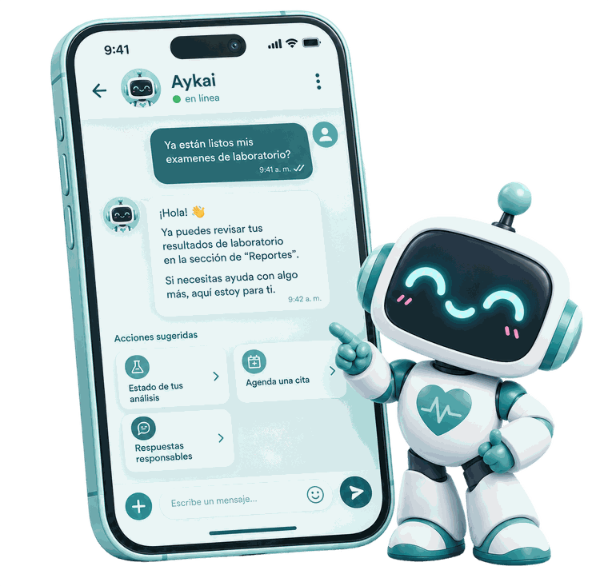
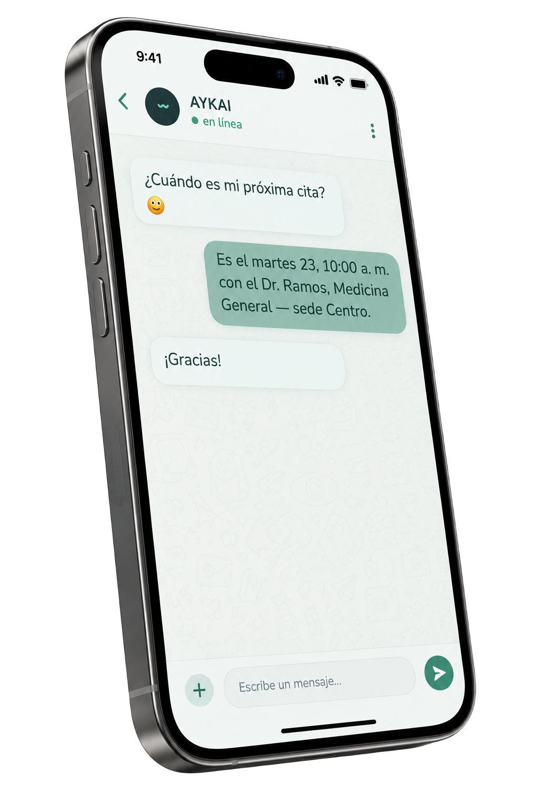
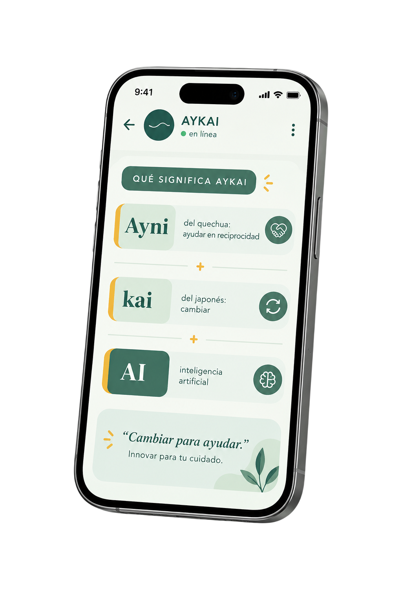
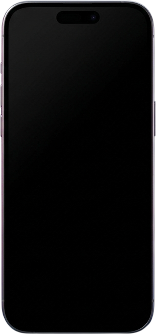
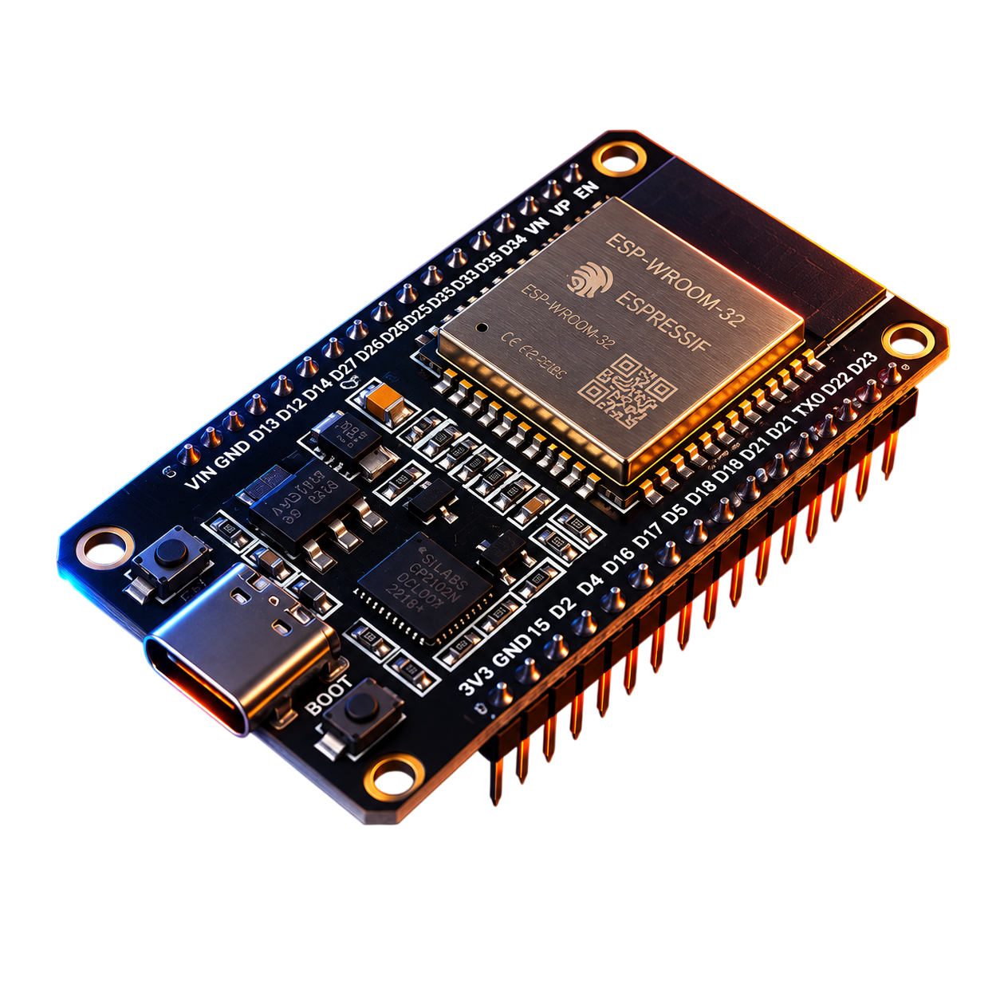
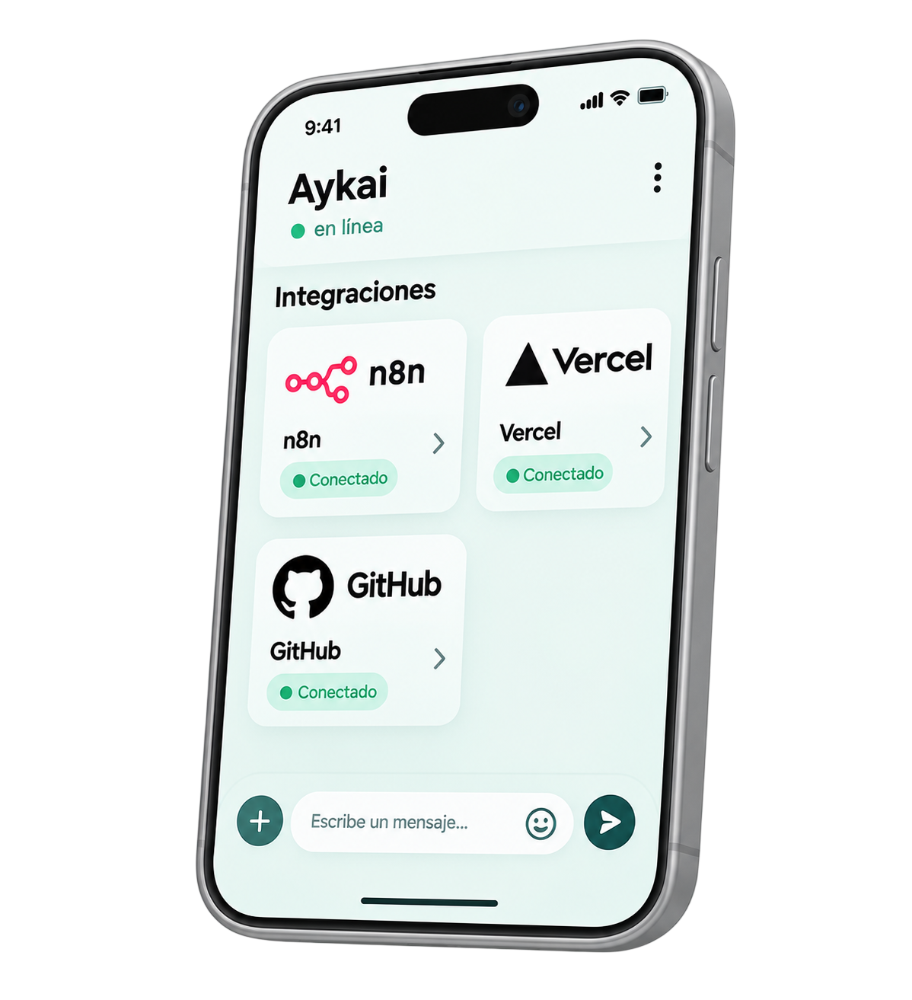
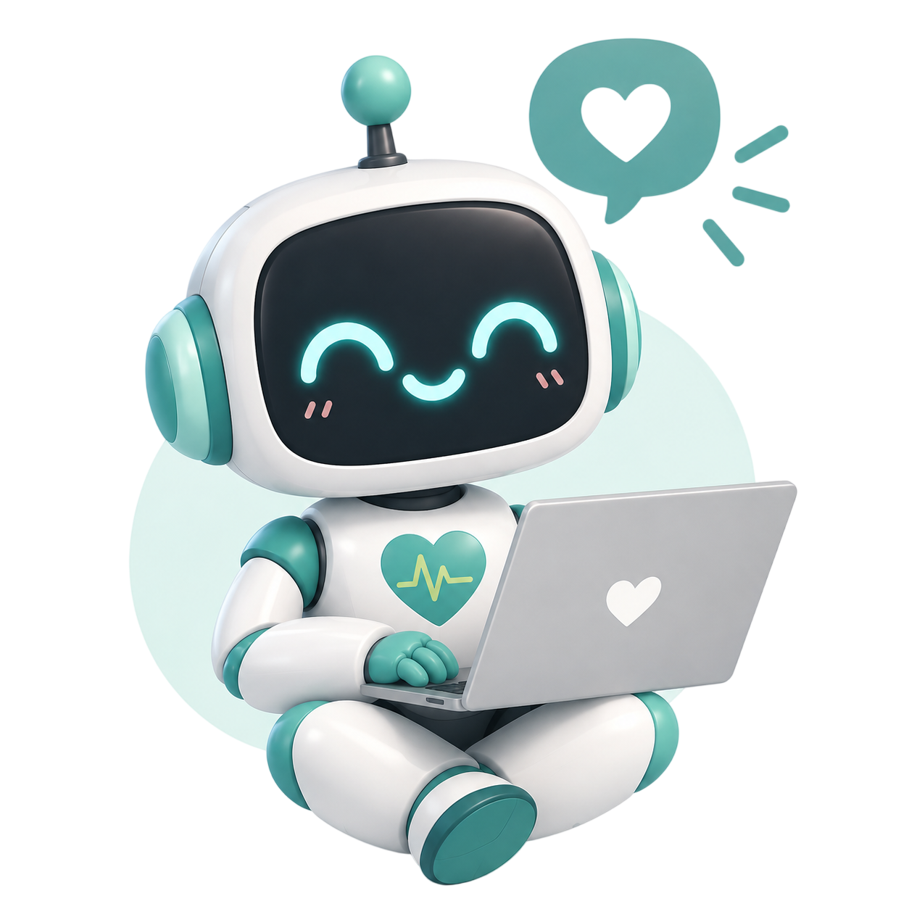

AYKAI atiende a tus pacientes por WhatsApp: agenda y consulta citas, revisa el estado de sus análisis y responde al instante. Sin llamadas que nadie contesta y sin colas.

Lo que un paciente necesita resolver de su atención, sin papeles, sin llamadas y sin salir de WhatsApp.
Fecha, hora, doctor, especialidad y sede, al toque y sin buscar entre papeles.
Te avisa cuando tus resultados de laboratorio ya están listos para recoger.

Elige día, sede y hora según la disponibilidad real, directo desde el chat.
¿No puedes ir? Cancela al instante y liberas el cupo para alguien más.
Habla claro y con paciencia, pensado también para los adultos mayores.
Ante un síntoma, siempre recomienda acudir a un médico. Nunca diagnostica ni saca conclusiones.
Sin apps que descargar ni formularios eternos. Si sabes usar WhatsApp, ya sabes usar AYKAI.

Abres el chat de AYKAI como le escribirías a cualquier contacto.
Un solo dato para reconocerte y cuidar tu información. Nada de claves.
Consulta, agenda o cancela en segundos. Listo, sin colas y sin esperas.
El servicio lo contratan los centros de salud. Los beneficios llegan a todos.
Instituciones que quieren automatizar su atención. Reducen llamadas, ahorran trabajo administrativo y evitan citas perdidas.
Sobre todo los adultos mayores, que resuelven sus trámites desde el celular, sin filas, sin llamadas perdidas y sin salir de casa.
AYKAI nació mirando al sector público, el más saturado, pero funciona para cualquier institución que quiera cuidar mejor a su gente.

En el Perú, saber si tus análisis ya están listos puede significar llamadas que nadie contesta, colas largas y trámites lentos. Quienes más lo sufren son los adultos mayores y los servicios públicos.
AYKAI convierte ese trámite en una conversación simple, desde el WhatsApp que ya usas todos los días.
Creamos asistentes de IA (los llamamos workers) para cualquier organización que quiera automatizar su atención. La salud es solo el comienzo.
Las piezas y las plataformas que le dan vida a AYKAI.

Así se veía AYKAI en desarrollo
La carita del robot. Aquí AYKAI muestra sus ojos y expresiones en tiempo real, dándole calidez y personalidad.

El microcontrolador que se conecta al WiFi, controla la pantalla y da vida a las expresiones del robot.

n8n automatiza el flujo del asistente, GitHub guarda el código y Vercel publica la web. Todo conectado.
Creemos que la tecnología debe acercar la salud, no complicarla. Cada quien aporta lo suyo para que AYKAI funcione de principio a fin.
Escríbele a AYKAI y descubre lo simple que puede ser cuidar a tus pacientes.
Hablar con AYKAI